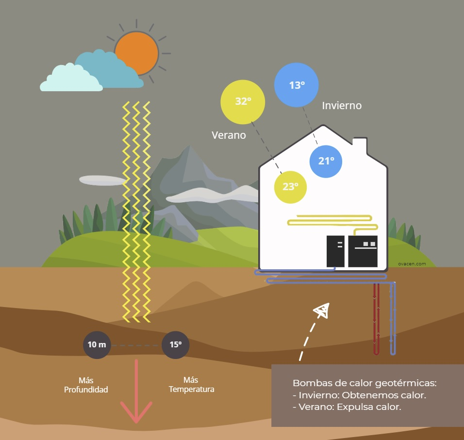
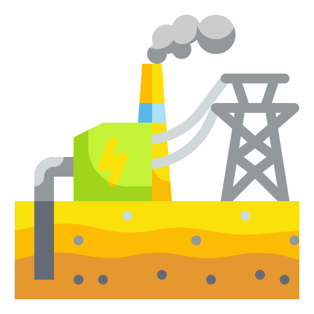
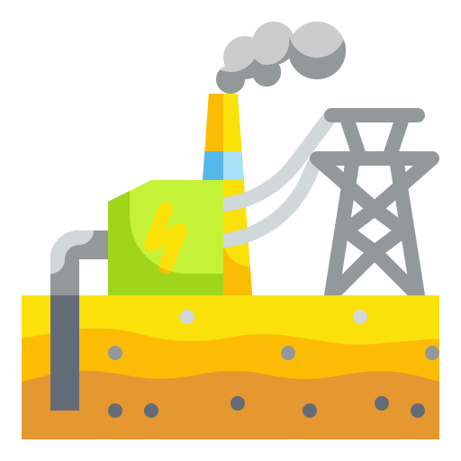

Información Teórica
La energía geotérmica es una fuente de energía renovable que se obtiene aprovechando el calor interno de la Tierra. Este tipo de energía es sostenible y tiene un impacto ambiental reducido en comparación con los combustibles fósiles.

Los sistemas geotermales pueden ser utilizados tanto para la generación de electricidad como para aplicaciones de calefacción y refrigeración en edificios. Con una correcta implementación, la energía geotérmica puede contribuir significativamente a la reducción del consumo energético y de las emisiones de gases de efecto invernadero.
 
